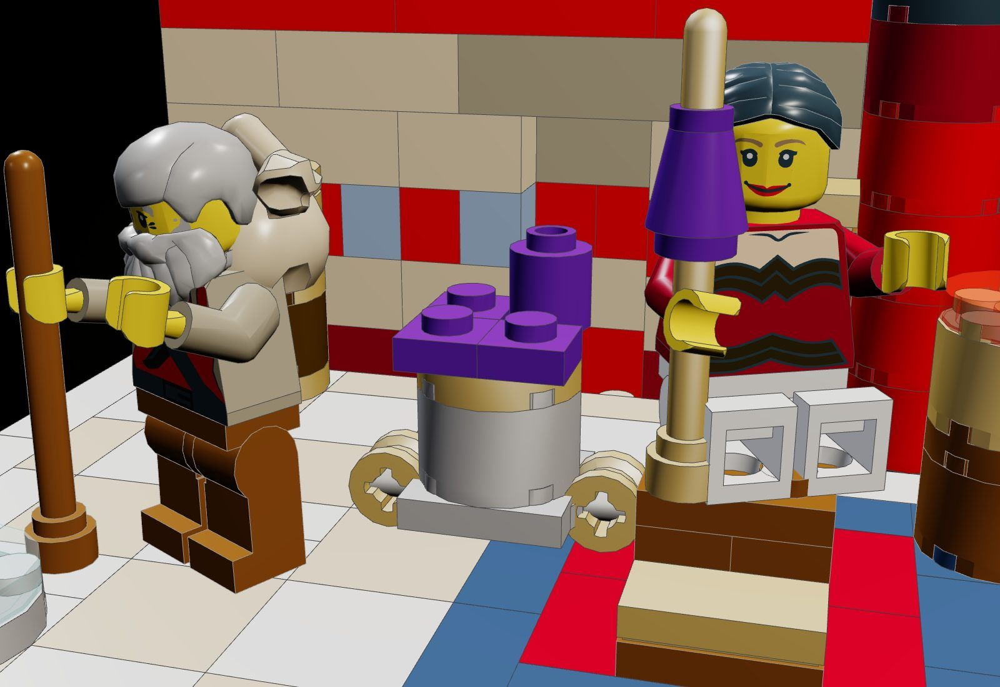
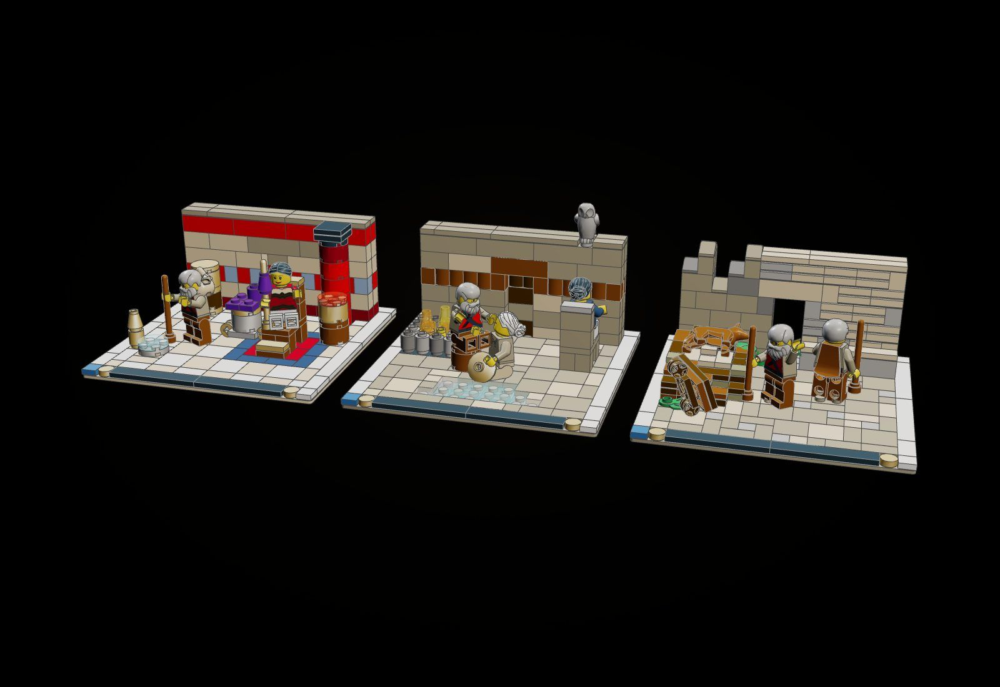

The Odyssey Line · Vignette · Book IV · 223 pieces
Helen Knows Him
In Sparta, at her silver work-basket, Helen tells how she alone knew Odysseus when he came into Troy disguised as a beggar, and bathed him, and kept his secret.
"I alone recognized him in this guise, and questioned him; but he in his craftiness sought to avoid me." (Odyssey IV, tr. A. T. Murray)

The object
The silver work-basket that runs on wheels, its rims finished in gold, heaped with violet wool, with the golden distaff in Helen's hand: roll it to her chair.


How it is built
- One of the four Recognitions (Helen, the Scar, Argos, the Bed), Vignettes on matching 16 x 16 baseplates built to one grammar so they stand in a row.
- The work-basket rolls: a plate with wheel pins and four pearl-gold rims under a pearl-silver round brick, violet wool on it.
- The wall of Menelaus's hall has a dark red dado, a fresco band of single blue and red bricks and a red frieze; a red column with a black capital stands before it.
- At the wall's centre a niche to the bathing-rooms, its curtain of red and dark red, under a tan lintel.
- Helen sits in a high chair on the rug of soft wool Alcippe brought, a footstool at her feet, the golden krater of her drugged wine beside her.
- The line's display finish on each base: a ring of white tiles, a black nameplate with a gold stud at each end, one blue tile.
- A back wall two studs deep across the base, six courses high in a running bond, with its one feature at the centre.
- A floor of tiles; plates only where a figure, a chair leg or a vessel stands, so no field of bare studs is left.
What the checker says
| Build | File | Pieces | Loose | Clashes |
|---|---|---|---|---|
| Helen Knows Him | set.recognition-helen | 223 | 0 | 0 |
In the film

Still to do
- The beggar is shown in Sparta beside Helen as the subject of her story; the bathing in Troy is told only by the pitcher and basin.
- The distaff is a gold antenna with a purple cone for the wool, held upright by the hand, not clipped.
- The niche is mostly hidden behind the figures from the front view.